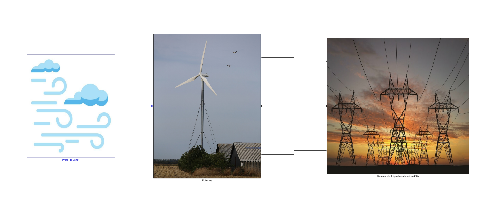
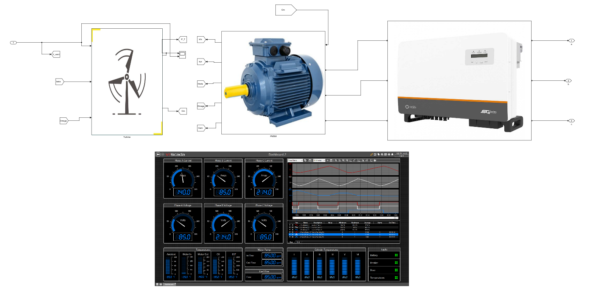
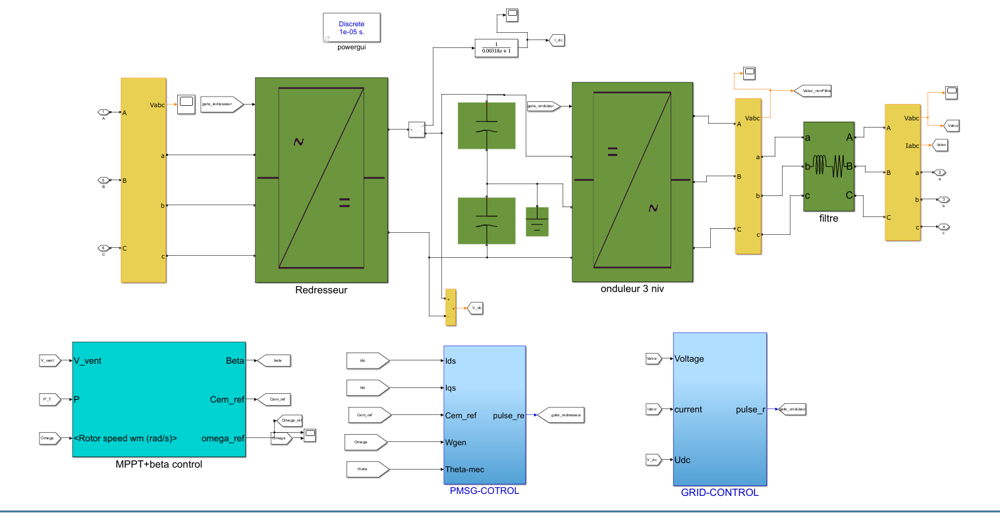
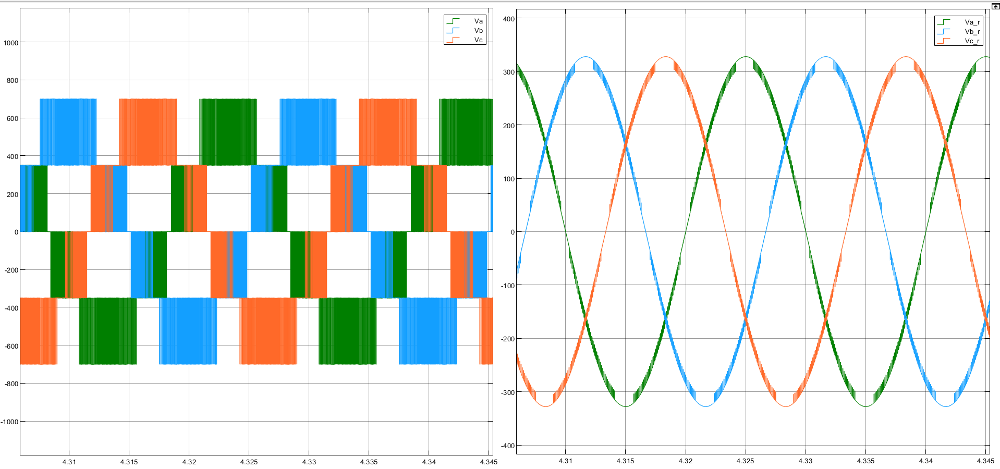
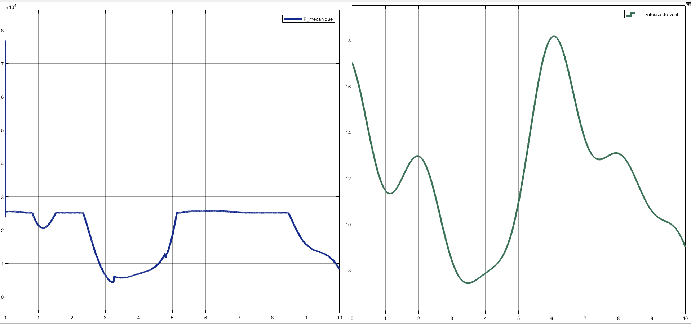
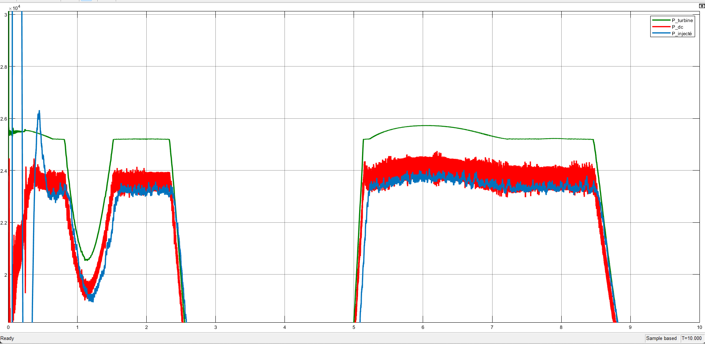
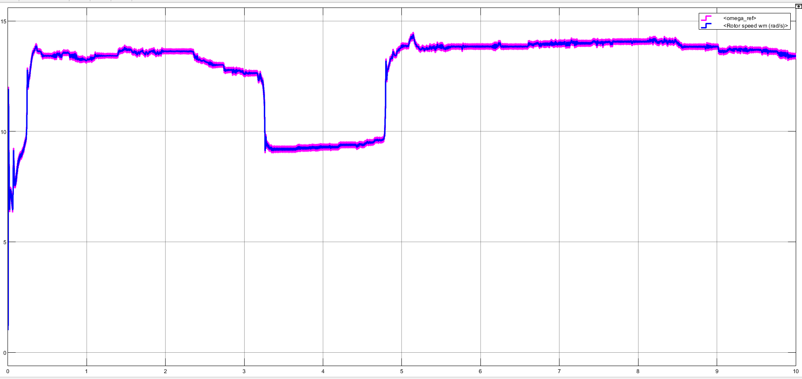
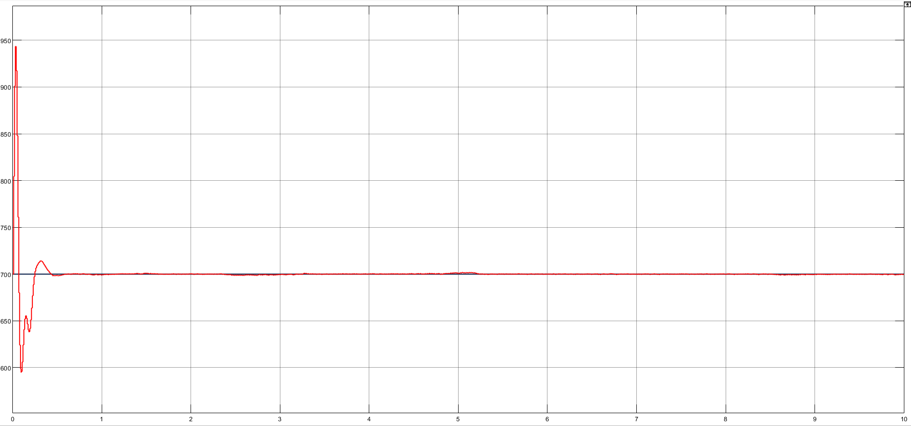
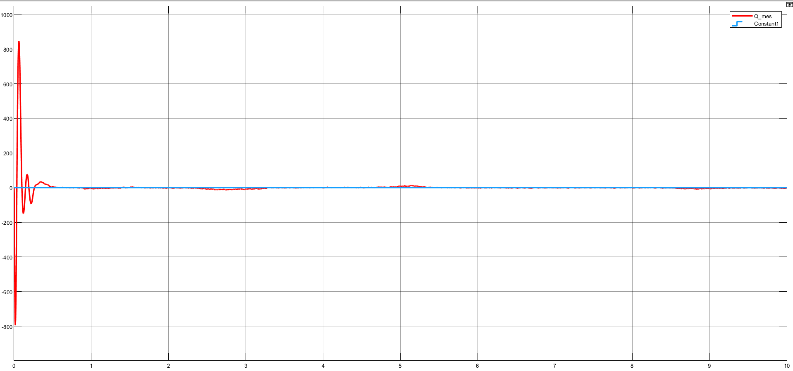

Commande vectorielle FOC, MPPT par conductance incrémentale et onduleur à trois niveaux
Les éoliennes à vitesse variable exploitent au mieux l'énergie du vent, mais elles exigent une électronique de puissance capable d'adapter la machine, le bus continu et le réseau. L'objectif de ce projet était de modéliser et commander une chaîne complète de conversion éolienne connectée à un réseau triphasé 400 V, puis de la valider par simulation sous MATLAB/Simulink : performances dynamiques, stabilité et efficacité de la stratégie de commande.
Modèle aérodynamique avec coefficient de puissance Cp(λ, β), entraînement direct de la machine (sans multiplicateur)
Modélisation dans le repère tournant (d, q) : équations électriques, couple électromagnétique et dynamique mécanique
Régulation des courants id et iq avec découplage, référence id* = 0 et iq* déduite du couple issu du MPPT
Conductance incrémentale pour l'extraction maximale, et contrôle de l'angle β pour limiter la puissance au-delà de 12 m/s
Deux condensateurs en série alimentant l'onduleur trois niveaux, tension régulée à 700 V
Onduleur NPC à diodes clampées, synchronisation réseau par PLL, filtre de sortie, puissance réactive régulée à 0
Le couple électromagnétique et la vitesse de rotation suivent leurs références, y compris lors des variations du profil de vent. Au-dessus de 12 m/s, l'angle de calage β augmente et sature la puissance de la turbine à 25 kW. La tension du bus DC reste stable autour de 700 V après le régime transitoire initial, et la puissance réactive est maintenue proche de zéro. Les tensions de sortie de l'onduleur, une fois filtrées, sont quasi sinusoïdales. Côté bilan de puissance, l'écart entre la turbine et l'électrique est d'environ 1 kW, avec un minimum de pertes d'environ 300 W entre le bus DC et le réseau.
Ce travail pose une base pour des études ultérieures : intégration dans un réseau intelligent, optimisation des stratégies de commande ou extension à plusieurs éoliennes.








